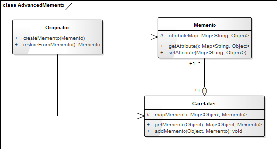

- 00 生活中的设计模式：启程之前，请不要错过我.md
- 01 监听模式：坑爹的热水器.md
- 02 适配模式：身高不够鞋来凑.md
- 03 状态模式：人与水的三态.md
- 04 单例模式：你是我生命的唯一.md
- 05 职责模式：我的假条去哪了.md
- 06 中介模式：找房子问中介.md
- 07 代理模式：帮我拿一下快递.md
- 08 装饰模式：你想怎么穿就怎么穿.md
- 09 工厂模式：你要拿铁还是摩卡.md
- 10 迭代模式：下一个就是你了.md
- 11 组合模式：自己组装电脑.md
- 12 构建模式：想要车还是庄园.md
- 13 克隆模式：给你一个分身术.md
- 14 策略模式：怎么来不重要，人到就行.md
- 15 命令模式：大闸蟹，走起！.md
- 16 备忘模式：好记性不如烂笔头.md
- 17 享元模式：颜料很贵必须充分利用.md
- 18 外观模式：学妹别慌，学长帮你.md
- 19 访问模式：一千个读者一千个哈姆雷特.md
- 20 生活中的设计模式：与经典设计模式的不解渊源.md
- 21 生活中的设计模式：那些未完待续的设计模式.md
- 22 深入解读过滤器模式：制作一杯鲜纯细腻的豆浆.md
- 23 深入解读对象池技术：共享让生活更便捷.md
- 24 深入解读回调机制：把你技能亮出来.md
- 25 谈谈我对设计模式的理解.md
- 26 谈谈我对设计原则的思考.md
- 27 谈谈我对项目重构的看法.md
16 备忘模式：好记性不如烂笔头
【故事剧情】
经过两三年的工作，Tony 学到的东西越来越多，业务也越来越熟，终于到了他该带领一个小组进行独立开发的时候了。作为小组负责人后的 Tony，工作自然就多了：要负责技术的选型、核心代码的开发，还要深度参与需求的讨论和评审；期间还会被各种会议、面试打扰。
工作压力变大之后，Tony 就经常忙的忘了这事、忘了那事！为了解决这个问题，不至于落下重要的工作，Tony 想了一个办法：每天 9 点到公司，花 10 分钟想一下今天有哪些工作项，有哪些线上问题必须要解决的，有哪些任务需要完成的，然后把这些列一个今日待工作项（To Do List），最后就是看一下新闻，刷一下朋友圈，等到 9:30 大家来齐后开始每日的晨会，接下来就是一整天的忙碌……
因此在每天工作开始（头脑最清醒的一段时间）之前，把今天需要完成的主要事项记录下来，列一个 To Do List，是非常有必要的。这样，当你忘记了要做什么事情时，只要看一下 To Do List 就能想起所有今天要完成的工作项，就不会因忘记某项工作而影响项目的进度，好记性不如烂笔头嘛！
用程序来模拟生活
Tony 为了能够随时回想起要做的工作项，把工作项都列到 To Do List 中做为备忘，这样就可以在因为忙碌而忘记时，通过查看 To Do List 来找回记忆。下面我们用程序来模拟一下这个示例。
源码示例：
class Engineer:
"工程师"
def __init__(self, name):
self.__name = name
self.__workItems = []
def addWorkItem(self, item):
self.__workItems.append(item)
def forget(self):
self.__workItems.clear()
print(self.__name + "工作太忙了，都忘记要做什么了！")
def writeTodoList(self):
todoList = TodoList()
for item in self.__workItems:
todoList.writeWorkItem(item)
return todoList
def retrospect(self, todoList):
self.__workItems = todoList.getWorkItems()
print(self.__name + "想起要做什么了！")
def showWorkItem(self):
if(len(self.__workItems)):
print(self.__name + "的工作项：")
for idx in range(0, len(self.__workItems)):
print(str(idx + 1) + ". " + self.__workItems[idx] + ";")
else:
print(self.__name + "暂无工作项！")
class TodoList:
"工作项"
def __init__(self):
self.__workItems = []
def writeWorkItem(self, item):
self.__workItems.append(item)
def getWorkItems(self):
return self.__workItems
class TodoListCaretaker:
"TodoList管理类"
def __init__(self):
self.__todoList = None
def setTodoList(self, todoList):
self.__todoList = todoList
def getTodoList(self):
return self.__todoList
测试代码：
def testEngineer():
tony = Engineer("Tony")
tony.addWorkItem("解决线上部分用户因昵称太长而无法显示全的问题")
tony.addWorkItem("完成PDF的解析")
tony.addWorkItem("在阅读器中显示PDF第一页的内容")
tony.showWorkItem()
caretaker = TodoListCaretaker()
caretaker.setTodoList(tony.writeTodoList())
print()
tony.forget()
tony.showWorkItem()
print()
tony.retrospect(caretaker.getTodoList())
tony.showWorkItem()
输出结果：
Tony的工作项：
1. 解决线上部分用户因昵称太长而无法显示全的问题;
2. 完成PDF的解析;
3. 在阅读器中显示PDF第一页的内容;
Tony工作太忙了，都忘记要做什么了！
Tony暂无工作项！
Tony想起要做什么了！
Tony的工作项：
1. 解决线上部分用户因昵称太长而无法显示全的问题;
2. 完成PDF的解析;
3. 在阅读器中显示PDF第一页的内容;
从剧情中思考备忘模式
在上面的示例中，Tony 将自己的工作项写在 TodoList 中作为备忘，这样，在自己忘记工作内容时，可以通过 TodoList 来快速恢复记忆。像 TodoList 一样，将一个对象的状态或内容记录起来，在状态发生改变或出现异常时，可以恢复对象之前的状态或内容，这在程序中叫做备忘录模式，也可简称备忘模式。
备忘录模式
capture the object's internal state without exposing its internal structure, so that the object can be returned to this state later.
在不破坏内部结构的前提下捕获一个对象的内部状态，这样便可在以后将该对象恢复到原先保存的状态。
备忘录模式的最大功能就是做备份，可以保存对象的一个状态作为备份，这样便可让对象在将来的某一时刻恢复到之前保存的状态。如同游戏中“死”了的英雄可以满血复活一样，再比如很多电器（如电视、冰箱）都有恢复出厂设置的功能，人生没有彩排，但程序却可以让你无数次回放！
备忘录模式的模型抽象
类图
备忘录模式的类图表示如下：

这是最原始和简单版本的备忘录模式的类图，在这个类图中，Originator 是要进行备份的对象的发起类，如示例中的 Engineer；Memento 是备份的状态，如示例中的 TodoList；Caretaker 是备份的管理类，如示例中的 TodoListCaretaker。Originator 依赖 Memento，但不直接与 Memento 进行交互，而是与 Memento 的管理类 Caretaker 进行交互。因为对于上层应用来说不用关心具体是怎么备份的以及备份了什么内容，而只需要创建一个备份点，并能从备份点中还原即可。
简单版本的备忘录模式只能备忘一个属性而且只能备忘一次。因此在实际项目中很少看到这个版本，因为大部分实际应用场景都比这复杂。在实际项目中，通常会对原始的备忘录模式进行改造，也就是备忘录模式的升级版本。我们看一下比较通用的一个升级版的类图：

代码框架
因为升级版的备忘录模式比较通用，我们可以抽象出升级版备忘录模式的代码框架模型。
from copy import deepcopy
class Memento:
"备忘录"
def setAttribute(self, dict):
"深度拷贝字典dict中的所有属性"
self.__dict__ = deepcopy(dict)
def getAttribute(self):
"获取属性字典"
return self.__dict__
class Caretaker:
"备忘录管理类"
def __init__(self):
self._mementos = {}
def addMemento(self, name, memento):
self._mementos[name] = memento
def getMemento(self, name):
return self._mementos[name]
class Originator:
"备份发起人"
def createMemento(self):
memento = Memento()
memento.setAttribute(self.__dict__)
return memento
def restoreFromMemento(self, memento):
self.__dict__.update(memento.getAttribute())
模型说明
（1）设计要点
备忘录模式中主要有三个角色，在设计备忘录模式时要找到并区分这些角色：
- 发起人（Originator）： 需要进行备份的对象。
- 备忘录（Memento）： 备份的状态，即一个备份的存档。
- 备忘录管理者（Caretaker）： 备份存档的管理者，由它负责与发起人的交互。
（2）优缺点
备忘录模式的优点：
- 给用户提供了一种可以恢复状态的机制，使得用户能够比较方便地回到某个历史的状态。
- 实现了信息的封装，用户不需要关心状态的保存细节。
备忘录模式的缺点：
- 如果类的成员变量过多，势必会占用比较大的资源，而且每一次保存都会消耗一定的内存，此时可以限制保存的最大次数。
实战应用
相信读者一定用过 DOS 命令行或 Linux 终端的命令，通过向上键或向下键可以快速地向前向后翻阅历史指令，选择其中的指令可以再次执行，这极大地方便了我们对命令的操作，这里就用到了对历史命令备忘的思想。下面我们可以模拟一下 Linux 终端的处理程序。
TerminalMonitor.py
#!/usr/bin/python
# Authoer: Spencer.Luo
# Date: 5/20/2018
# 引入升级版备忘录模式关键类
from pattern.Memento import Originator, Caretaker, Memento
class TerminalCmd(Originator):
"终端命令"
def __init__(self, text):
self.__cmdName = ""
self.__cmdArgs = []
self.parseCmd(text)
def parseCmd(self, text):
"从字符串中解析命令"
subStrs = self.getArgumentsFromString(text, " ")
# 获取第一个字段作为命令名称
if(len(subStrs) > 0):
self.__cmdName = subStrs[0]
# 获取第一个字段之后的所有字符作为命令的参数
if (len(subStrs) > 1):
self.__cmdArgs = subStrs[1:]
def getArgumentsFromString(self, str, splitFlag):
"通过splitFlag进行分割，获得参数数组."
if (splitFlag == ""):
print("splitFlag is empty!")
return ""
data = str.split(splitFlag)
result = []
for item in data:
item.strip()
if (item != ""):
result.append(item)
return result;
def showCmd(self):
print(self.__cmdName, self.__cmdArgs)
class TerminalCaretaker(Caretaker):
"终端的备忘录管理类"
def showHistoryCmds(self):
"显示历史命令"
for key, obj in self._mementos.items():
name = ""
value = []
if(obj._TerminalCmd__cmdName):
name = obj._TerminalCmd__cmdName
if(obj._TerminalCmd__cmdArgs):
value = obj._TerminalCmd__cmdArgs
print("第" + str(key) + "条命令: " + str(name) + " " + str(value))
def testTerminal():
cmdIdx = 0
caretaker = TerminalCaretaker()
curCmd = TerminalCmd("")
while (True):
strCmd = input("请输入指令：");
strCmd = strCmd.lower()
if (strCmd.startswith("q")):
exit(0)
elif(strCmd.startswith("h")):
caretaker.showHistoryCmds()
# 通过"!"符号表示获取历史的某个指令
elif(strCmd.startswith("!")):
idx = int(strCmd[1:])
curCmd.restoreFromMemento(caretaker.getMemento(idx))
curCmd.showCmd()
else:
curCmd = TerminalCmd(strCmd)
curCmd.showCmd()
caretaker.addMemento(cmdIdx, curCmd.createMemento())
cmdIdx +=1
testTerminal()
输出结果：

应用场景
- 需要保存/恢复对象的状态或数据，如游戏的存档、虚拟机的快照。
- 需要实现撤销、恢复功能的场景，如 Word 中的 Ctrl+Z、Ctrl+Y 功能，DOS 命令行或 Linux 终端的命令记忆功能。
- 提供一个可回滚的操作，如数据库的事务管理。